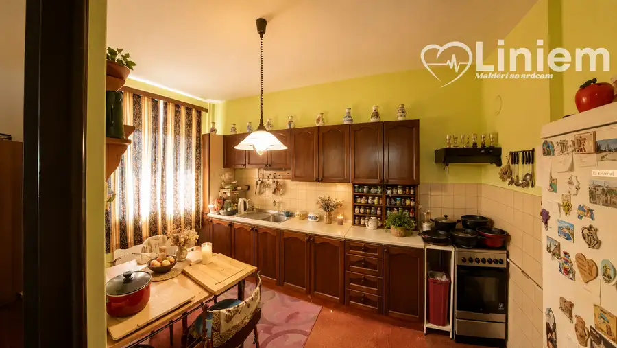
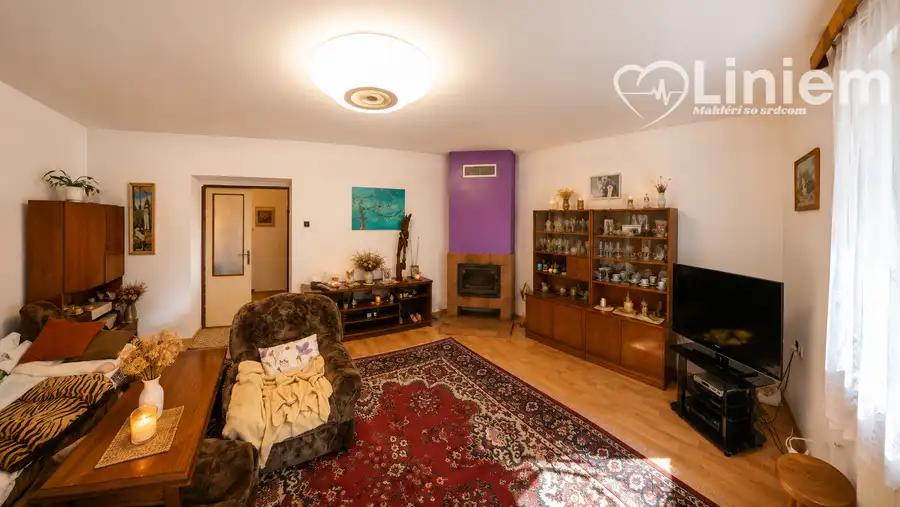
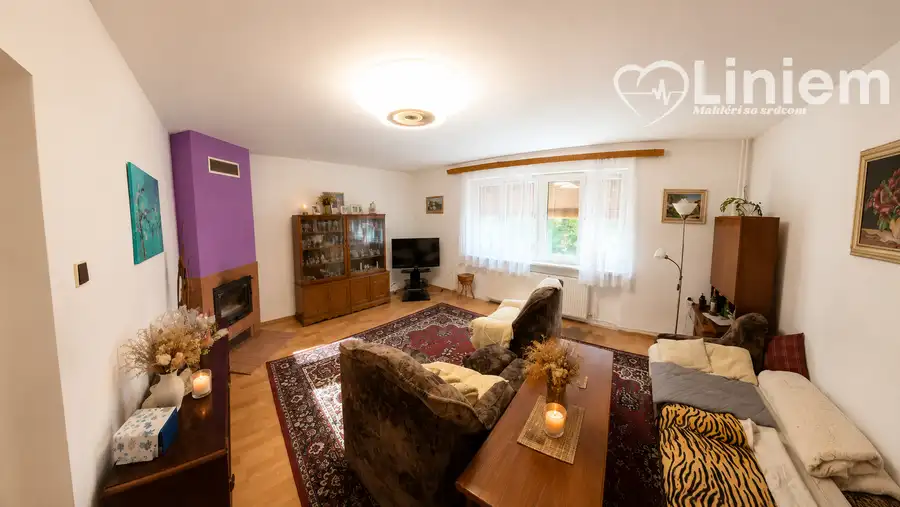
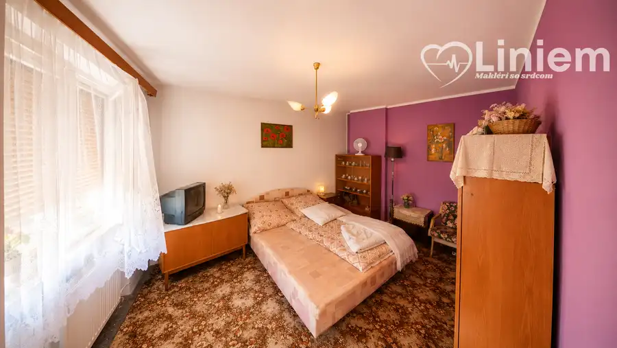
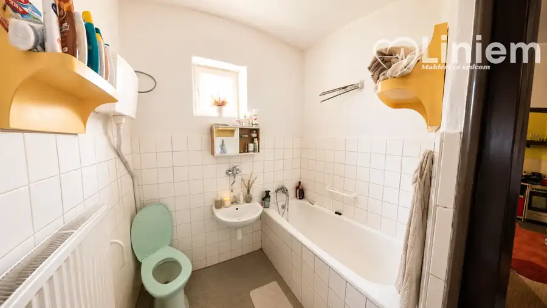
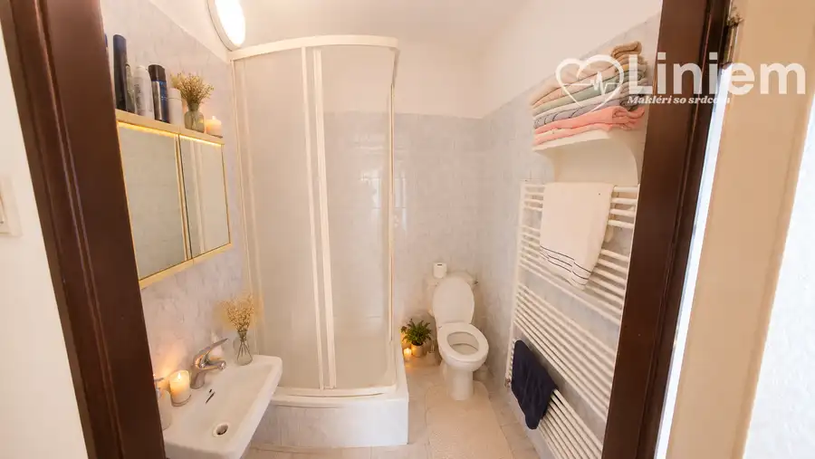

Na predaj dom,ktorý čaká na svoju novú rodinu
Pezinok







- Plocha758 m²
- StavPôvodný stav
- VlastníctvoOsobné
O nehnuteľnosti
Hľadáte ihlu v kope sena? Možno ste ju práve našli.Nie každý deň sa na trhu objaví rodinný dom, ktorý ponúka skvelú adresu, veľkorysý pozemok a zároveň možnosť vytvoriť si bývanie presne podľa vlastných predstáv.Len u nás vám v exkluzívnej spolupráci s majiteľmi ponúkame na predaj 4-izbový samostatne stojaci rodinný dom na vyhľadávanej Komenského ulici v Pezinku.Dom je dôkazom toho, že kvalitná stavba nikdy nevyjde z módy. Je zdravý, udržiavaný a pripravený na to, aby mu nový majiteľ vdýchol nový život podľa svojho vkusu a potrieb. Nachádza sa v pôvodnom stave, pričom vymenené boli iba predné a zadné vstupné plastové dvere.Dispozícia domu ponúka dostatok priestoru pre rodinný život. K dispozícii sú dve kúpeľne s toaletami, čo zabezpečuje pohodlie aj pre viacčlennú rodinu.Dom je dvojpodlažný a kompletne podpivničený, takže ponúka množstvo úložného priestoru, technické zázemie alebo miesto na dielňu či vaše hobby.Veľkým benefitom je garáž s montážnou jamou, ktorú ocení nejeden domáci majster alebo automobilový nadšenec.Nehnuteľnosť je napojená na všetky inžinierske siete a nachádza sa na krásnom pozemku s výmerou 758 m². Súčasťou domu je aj terasa, ktorá vytvára príjemné miesto na oddych a rodinné stretnutia.Základné informácie:✔ 4-izbový samostatne stojaci rodinný dom✔ Komenského ulica – Pezinok✔ dvojpodlažný✔ kompletne podpivničený✔ pozemok 758 m²✔ terasa✔ garáž s montážnou jamou✔ 2 kúpeľne a toalety ✔ všetky inžinierske siete✔ pôvodný stav – ideálny na rekonštrukciu podľa vlastných predstávAk hľadáte dom, ktorý vám dá slobodu vytvoriť si bývanie presne podľa svojich predstáv, no zároveň stojí na výbornej adrese a ponúka poctivú stavbu s veľkým potenciálom, táto ponuka by rozhodne nemala uniknúť vašej pozornosti.Radi vám túto nehnuteľnosť osobne predstavím. Možno práve tu nájdete miesto, ktoré budete s hrdosťou nazývať domov.Neváhajte a zavolajte mi .Gabriela Mihalčinová 0940555035 mihalcinova@liniemreality.sk
Parametre
- Druh
- Rodinný dom
- Dátum zverejnenia
- 17. 07. 2026
- Energetická náročnosť
- Z klasických materiálov
- Energetický certifikát budovy
- nie je
- Plocha pozemku
- 0 m²
- Počet garáží
- 1
- Počet izieb / miestností
- 4
- Počet nadzemných podlaží
- 1
- Stav nehnuteľnosti
- Pôvodný stav
- Telekomunikácie
- Telefón
- Typ
- Predaj
- Typ konštrukcie
- Zmiešaná
- Vlastníctvo
- Osobné
- Vybavenie
- Terasa, Garáž, Pivnica, Špajza, Technická miestnosť
- Zastavaná plocha
- 758 m²
- Úžitková plocha
- 758 m²
Kde to je


Mohlo by Vás zaujímať
 DomNové
185 000 €Jedinečný industriálny priestor: Na predaj historická sýpka na bývanie i podnikanie
Alekšince
984 m²
DomNové
185 000 €Jedinečný industriálny priestor: Na predaj historická sýpka na bývanie i podnikanie
Alekšince
984 m²
 DomNové
149 500 €Postavené. Prežité. Pripravené pre vás. Cabaj-Čápor
Cabaj-Čápor
117 m²
DomNové
149 500 €Postavené. Prežité. Pripravené pre vás. Cabaj-Čápor
Cabaj-Čápor
117 m²
 DomRezervované
193 000 €Kúpte si dom v ZM, bonus: susedia na nezaplatenie
Zlaté Moravce
639 m²
DomRezervované
193 000 €Kúpte si dom v ZM, bonus: susedia na nezaplatenie
Zlaté Moravce
639 m²